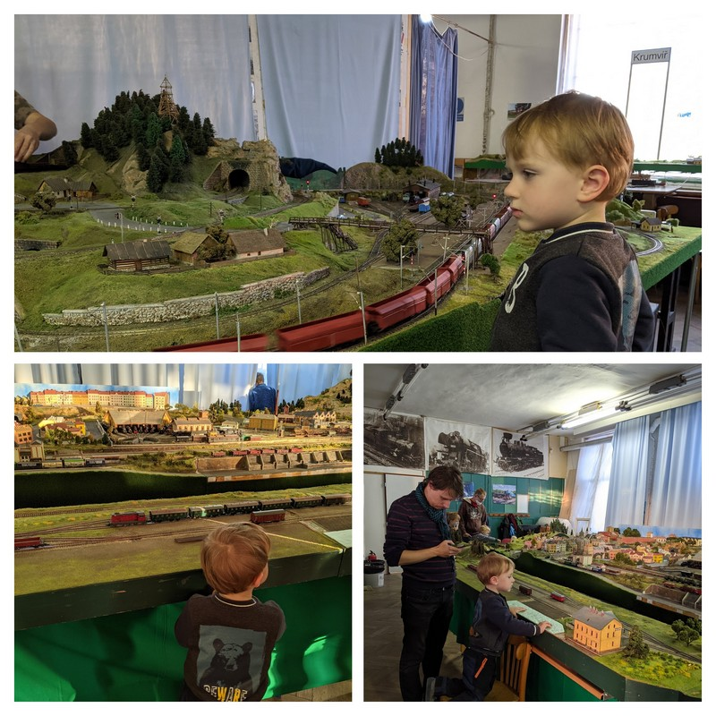
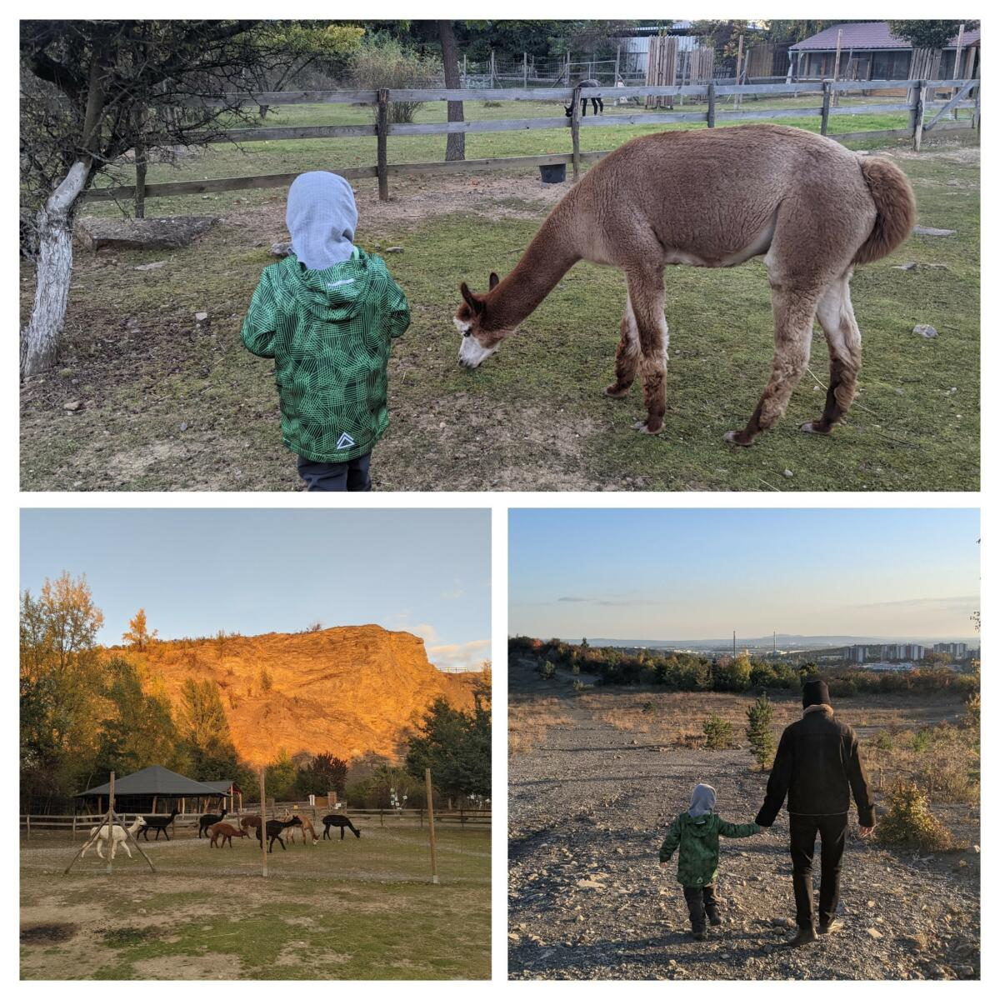
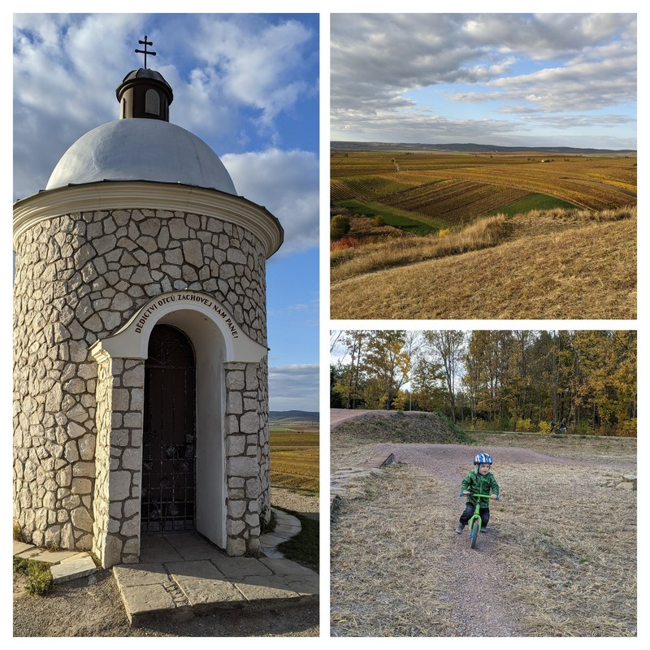
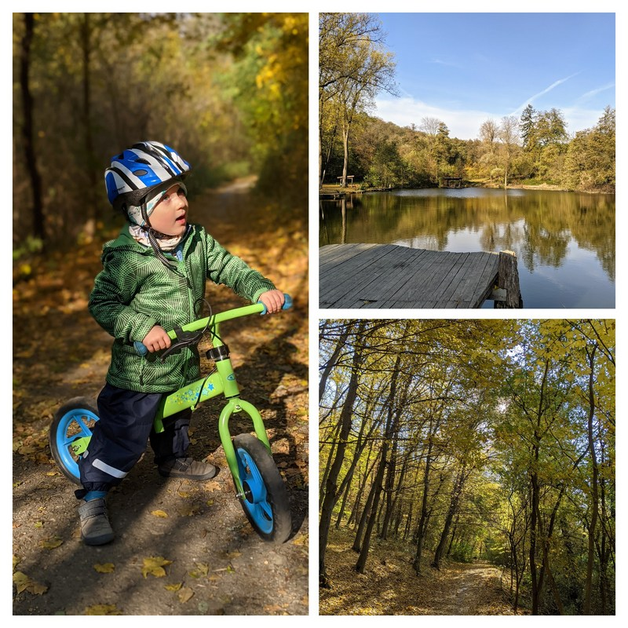
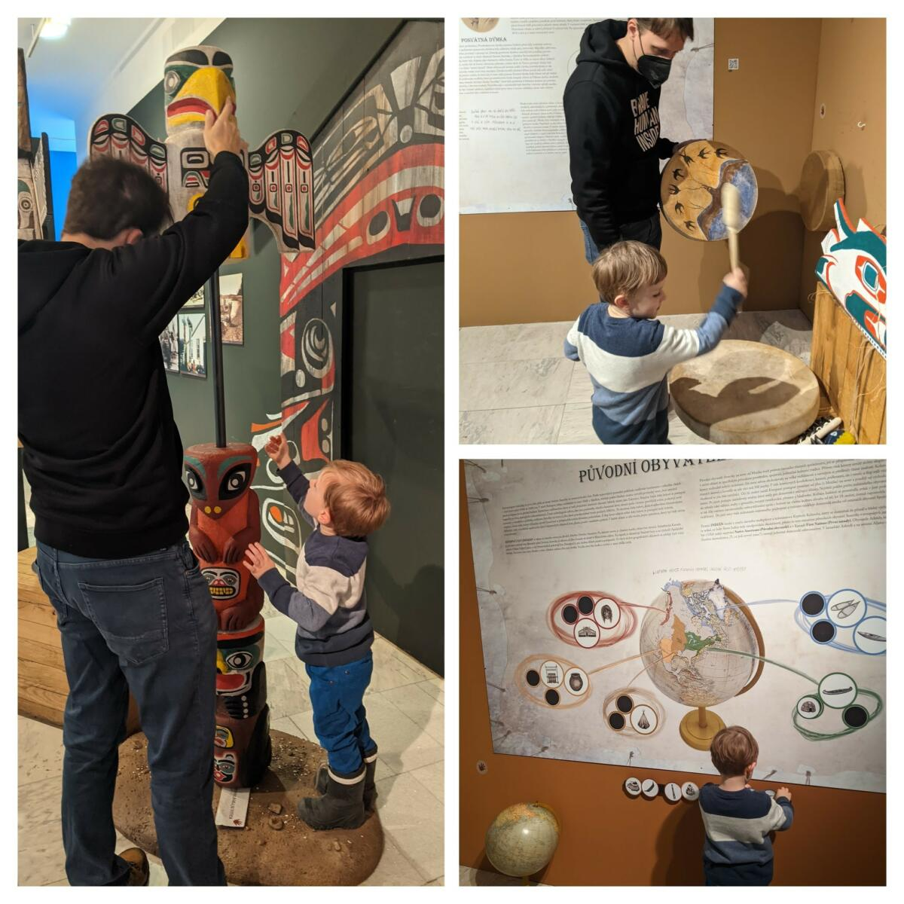

Vítám vás na blogu v novém roce 2022! Přelom starého a nového roku vybízí k bilancování a vzpomínání, já mám ale dnes chuť zůstat spíš u toho druhého a ohlédnout se za poslední sérií našich loňských výletů. A že jich dohromady bylo!
Výstava v Klubu modelářů železnic, Mosilana
Na tuhle výstavu asi jen tak nezapomeneme - navštívili jsme ji totiž o volebním víkendu v podvečer, kdy už probíhalo sčítání hlasů. Zatímco Oli tedy běhal od mašinky k mašince a místní šotouši byli ve svém živlu, my s Péťou jsme na mobilu sledovali nervydrásající volební drama s dobrým koncem :-D Ale zpátky k věci - výstava byla opravdu úžasná, modely jsou propracované do těch nejmenších detailů (včetně cinkajících přejezdů nebo sinchronizace vlakové a autobusové dopravy :-) a asi nemusím zdůrazňovat, že O. byl z toho všeho v sedmém nebi. Však jsme taky odcházeli až po zavíračce.

Lamacentrum Hády
Lom Hády je naší oblíbenou výletní destinací, ale v Lamacentru jsme se byli s Olíkem podívat poprvé až teď. Krom stáda lam se tu děti můžou setkat i s dalšími zvířátky - králíky, kozami či ovečkami. My jsme si při vstupu koupili i krmení, aby byl zážitek ještě veselejší :-) Prohlídka v lamím výběhu je poměrně krátká, takže jsme ji v pohodě zvládli absolvovat i s neposedným O. V areálu najdete i další vyžití pro děti, třeba bosonohý chodníček či vodní prvky, které ale na podzim už nebyly v provozu. Menší nevýhodou je, že se nedá dojet autem až k Lamacentru. My nechali auto nahoře na Klajdovce a udělali si procházku lomem, což je obzvlášť během zlaté hodinky krásný zážitek.

Velké Bílovice
Naše podzimní výletování by nebylo kompletní bez alespoň jednoho výjezdu do vinařské oblasti :-) Tentokrát volba padla na Velké Bílovice, které mají co nabídnout malým i velkým výletníkům. My jsme naše putování zahájili u místního rozsáhlého hřiště a sportoviště (odrážedla s sebou!) - najdete tu báječnou pumptrackovou dráhu (i pro mrňata), skvělou jízdní dráhu pro malé cyklisty či bruslaře, minigolf, skatepark i klasické dětské hřiště. Až se O. dostatečně vyřádil, vydali jsme se k dalšímu povinnému zastavení - a sice ke známé kapli na Hradišťku, k níž vede malebná cesta mezi vinicemi a výhledy přímo od kapličky jsou dechberoucí neméně - obzvlášť v záři ospalého, podzimního zapadajícího slunce.

Zukalův rybník
Tohle nenápadné místo leží mezi Mariánským údolím a obcí Podolí u Brna. Naleznete zde výletní hospůdku s vybaveným dětským hřištěm, Zukalův mlýn se spoustou zvířátek i malebnou stezku vhodnou pro malé cyklisty. Nevím, jestli to bylo tím krásným podzimním dnem, ale nás tohle místo svým klidem okouzlilo a rádi sem zase někdy zavítáme.

Výstava Óóó Indiáni, Pavilon Anthropos
Na závěr tady mám jeden tip na výstavu, která bude probíhat ještě několik měsíců, a tak ji třeba také stihnete. Výstava si klade za cíl představit historii a kulturu původních obyvatel Severní Ameriky - zejména významných indiánských národů a kmenů z hlediska různých kulturních okruhů, rozmanitosti prostředí a dalších životních zvyklostí. Zatím s O. na výstavy moc nechodíme, přecejen on není ten typ, který by vydržel procházet se mezi exponáty a poslouchat můj výklad. Byl to tedy trochu punk vzít ho sem, nicméně musím říct, že díky spoustě interaktivních prvků to docela šlo a byť jsem si osobně nepřečetla z panelů skoro nic, strávili jsme na výstavě dobrou hodinu a bylo to moc fajn. Mohli jsme si třeba vyzkoušet postavit totem, podívat se, jak to vypadá uvnitř iglů či si zahrát na indiánské hudební nástroje a domů jsme si odnesli ilustrovanou brožurku s těmi nejzajímavějšími informacemi o jednotlivých kmenech.

Že by přece jen trocha toho bilancování na závěr :-)? Byl to nabitý rok. Místy náročný a intenzivní. A mám pocit, že kolem mě jen tak profrčel, jako bych seděla v rychlíku. Naštěstí jsem ale měla vedle sebe ty nejlepší spolupasažéry :-) Už teď se těším, co nového spolu letos zase zažijeme.